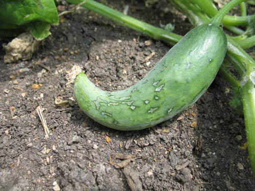

Why Manage Pollination?
In most fruits, vegetables, forages, and oilseeds, insects are either required for pollination to take place at all, or they are necessary to obtain the higher yields that result from cross-pollination.
Unfertilized ovules may lead to lower yields and/or small or misshapen fruit. Most plants produce more ovules than they can support to maturity, and so seeds may abort naturally. However, it is still important to ensure that the remaining fruit is fully pollinated, to ensure size and symmetry. Developing seeds stimulate the growth of fruit tissue. More seeds result in more tissue, and an even distribution of seeds within the fruit ensures symmetrical growth.
Insects can both encourage cross-pollination and facilitate self-pollination, and therefore can improve yield and productivity of a self-fertile crop as well.

Example of a poorly pollinated cucumber (photo courtesy of Missouri Botanical Gardens)
{kind=link}

Fully pollinated fruit are larger and more symmetrical than their underpollinated counterparts